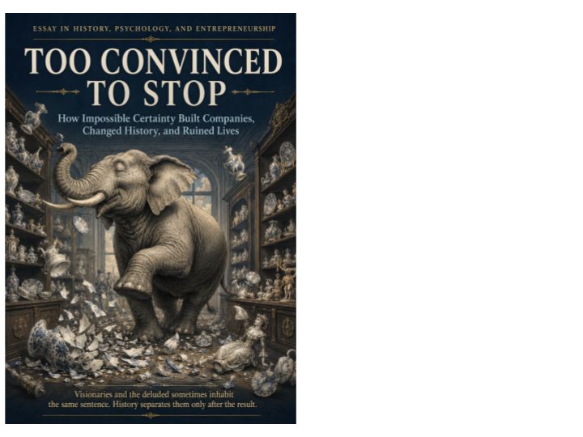

Power & responsibility · Axiologic Research Editions
Too Convinced to Stop
Conviction, Reality Distortion and the Right to Be Wrong
Stand beside the visionary before history reveals whether the wager will work. Edison, Ford, Tesla, Jobs, Holmes, explorers, religious leaders, and political rulers expose the same urgent question: while evidence is incomplete and charisma is gathering power, who can still contradict the mission—and survive being right?
The virtue that can become a hazard
Every ambitious undertaking needs people who continue after ordinary confidence has run out. Too Convinced to Stop begins there, refusing the easy lesson that conviction is simply pathological. Without unusual persistence, there would be little exploration, research or entrepreneurship. Yet the same mechanism can turn correction into betrayal and convert other people’s trust into fuel for a private vision.
The book builds an analytic model before it offers case studies. It then moves through founders who bent reality, corporate “reality distortion,” historical controls and, finally, the bill and the brakes. The architecture matters: it keeps charisma from becoming its own explanation. Conviction is examined as a social arrangement of incentives, status, secrecy, feedback and consequence.
When belief becomes infrastructure
Why does certainty persuade us? The book follows the mechanics of impossible certainty: a coherent narrative can reduce anxiety, promise identity and make ambiguity look like cowardice. In organisations, this emotional force is amplified when a leader controls information, defines dissent as disloyalty or repeatedly shifts the date at which success must arrive.
What distinguishes a visionary from a fraud? It is not simply whether the wager eventually wins. The cases around entrepreneurial ambition, Theranos, WeWork and FTX make outcomes insufficient as a moral test. The stronger distinction concerns representations made to people who bear risk, the availability of evidence, the right to challenge claims and whether an organisation can correct course before a reckoning is imposed from outside.
Who pays for a leader’s belief? This is the book’s sharpest question. It reads Lysenkoism and the Great Leap Forward alongside corporate cases to show that “belief” can migrate downward: employees, users, investors and whole populations absorb costs while the believer preserves the story. The answer is not to abolish risk; it is to make its distribution visible and to build brakes that do not depend on the leader’s sudden humility.
The moral problem begins when someone’s certainty grants them the power to make other people live inside its consequences.
The price paid offstage
The book is especially good at resisting retrospective smugness. Failed founders are not all deluded, and successful ones are not vindicated in every method by success. By treating exploration, religious commitment and state science as comparative controls, it asks the reader to develop a more precise appetite for evidence and dissent.
Leaders, investors and people inside high-conviction companies will recognise the moment when they are asked to “believe” before the facts are available. The final defence is not cynical detachment but a mature right to be wrong: systems in which revision is possible before conviction needs a catastrophe to end it.